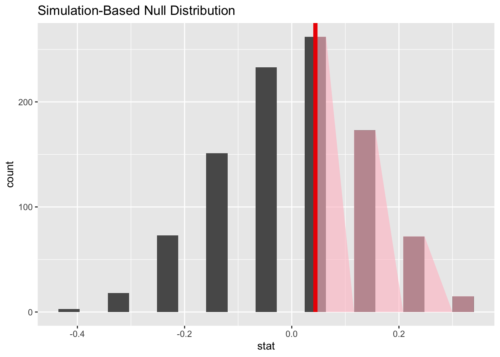

library(tidyverse)
library(tidymodels)
library(openintro)More hypothesis testing
An hypothesis test is a way of determining which of two competing claims a dataset is most consistent with. If, for example, we are investigating whether two experimental groups (treatment and control) have the same probability of exhibiting some characteristic, we state the claims as null and alternative hypotheses:
\[ \begin{align*} \text{H}_0&:p_{\text{trt}} = p_{\text{ctr}}\\ \text{H}_A&:p_{\text{trt}} \neq p_{\text{ctr}}. \end{align*} \]
So the question becomes “do these groups have the same probability, or not?” An alternative way of writing these hypotheses is
\[ \begin{align*} \text{H}_0&:p_{\text{trt}} - p_{\text{ctr}} =0\\ \text{H}_A&:p_{\text{trt}} - p_{\text{ctr}}\neq 0. \end{align*} \]
To answer this question, we must judge how compatible our point estimates \(\hat{p}_{\text{trt}}\) and \(\hat{p}_{\text{ctr}}\) are with the null hypothesis, and we do this by calculating a \(p\)-value and deciding if it is small enough.
This primer leads you down the path of least resistance to calculating the \(p\)-value.
Load packages
Dataset: is yawning contagious?
An experiment conducted by the MythBusters tested if a person can be subconsciously influenced into yawning if another person near them yawns. In this study 50 people were randomly assigned to two groups: 34 to a group where a person near them yawned (treatment) and 16 to a control group where they didn’t see someone yawn (control). This is the yawn dataset, pre-loaded in the openintro package:
yawn# A tibble: 50 × 2
result group
<fct> <fct>
1 yawn trmt
2 yawn trmt
3 yawn trmt
4 yawn trmt
5 yawn trmt
6 yawn trmt
7 yawn trmt
8 yawn trmt
9 yawn trmt
10 yawn trmt
# ℹ 40 more rowsIn this case, we are interested in a one-sided alternative. We want to know if there is evidence to suggest that proximity to a yawner specifically increases your probability of yawning. So we are testing:
\[ \begin{align*} \text{H}_0&:p_{\text{trt}} - p_{\text{ctr}} =0\\ \text{H}_A&:p_{\text{trt}} - p_{\text{ctr}}> 0. \end{align*} \]
The sample proportions in each experimental group are as follows
yawn |>
count(group, result) |>
group_by(group) |>
mutate(p_hat = n / sum(n))# A tibble: 4 × 4
# Groups: group [2]
group result n p_hat
<fct> <fct> <int> <dbl>
1 ctrl not yawn 12 0.75
2 ctrl yawn 4 0.25
3 trmt not yawn 24 0.706
4 trmt yawn 10 0.294This code computes the differences in the yawning proportions:
obs_stat_yawner <- yawn |>
specify(response = result, explanatory = group, success = "yawn") |>
calculate(stat = "diff in props", order = c("trmt", "ctrl"))
obs_stat_yawnerResponse: result (factor)
Explanatory: group (factor)
# A tibble: 1 × 1
stat
<dbl>
1 0.0441We see that there is some positive difference in the proportion of yawners in each group, but how can we tell if it is merely an artifact of random sampling, or if we are actually picking up on a meaningful difference? That is what hypothesis testing is all about.
Simulating the null distribution
In order to assess whether or not the estimated difference of 29.4% - 25% = 4.4% is compatible with the hypothesized difference of 0%, we look at the null distribution of the estimator. This is the hypothetical sampling distribution that the sample difference would possess if the null hypothesis happened to be true. When we visualize this distribution, it displays the range of values that our estimate would be likely to have if the null were true. We then compare this to the actual estimate that our actual data actually gave us, and if the actual estimate and the null distribution appear to be incompatible with one another, then we reject the null hypothesis and accept the alternative.
The following code simulates the null distribution of the sample difference in proportions:
set.seed(25)
null_dist_yawner <- yawn |>
specify(response = result, explanatory = group, success = "yawn") |>
hypothesize(null = "independence") |>
generate(reps = 1000, type = "permute") |>
calculate(stat = "diff in props", order = c("trmt", "ctrl"))
null_dist_yawnerResponse: result (factor)
Explanatory: group (factor)
Null Hypothesis: independence
# A tibble: 1,000 × 2
replicate stat
<int> <dbl>
1 1 0.0441
2 2 -0.140
3 3 -0.0478
4 4 -0.232
5 5 0.0441
6 6 -0.232
7 7 -0.0478
8 8 -0.0478
9 9 0.136
10 10 -0.0478
# ℹ 990 more rowsSo this code generates 1,000 fake data sets, and calculates the difference in sample proportions for each one. Here is what each line is doing:
set.seed(25): we are setting the random number seed to ensure that our results are perfectly replicable;specify(response = result, explanatory = group, success = "yawn"): first we specify which columns in our data frame we are using. These columns are categorical variables, each with two levels, so next we have to tell the computer which level of the response (“yawn” versus “not yawn”) we are calculating the proportions of;hypothesize(null = "independence"): since our null hypothesis states that there is no difference between these groups. In other words, the groups are “independent;”generate(reps = 1000, type = "permute"): the null distribution is a sampling distribution, the same as when we studied confidence intervals and bootstrapping. So here we tell it how many alternative, hypothetical datasets we wish to simulate in order to get a pretty-looking histogram. The more the merrier, I say;calculate(stat = "diff in props", order = c("trmt", "ctrl")): the statistic we are estimating in this case is the difference in group proportions. On Lab 5 we considered other statistics of interest: sample means, medians, standard deviations, and so forth.
Visualizing the null distribution, observed statistic, and \(p\)-value
Here is the code:
null_dist_yawner |>
visualize() +
shade_p_value(obs_stat = obs_stat_yawner, direction = "greater")
There are three aspects to it:
- When we simulate the null distribution of the sample proportion as above, we get a list of 1,000 numbers. To visualize the null distribution, we can simply plot a histogram of these;
- to visualize where the actual estimated difference of 4.4% falls in that distribution, we can add a vertical line;
- The \(p\)-value is the probability, assuming the null is true, of observing a sample statistic as or more extreme then the one we actually got. So it’s the probability under the null of seeing something even farther to the right of 4.4%, or something correspondingly far to the left. The fraction of the area shaded red is the \(p\)-value.
Inspecting the picture, we see that our estimated difference is pretty much smack in the middle of the null distribution. So the null hypothesis of no difference is very much in play. Evidence is insufficient to reject it.
Computing the p-value
To quantify that intuition, this code calculates the \(p\)-value:
null_dist_yawner |>
get_p_value(obs_stat = obs_stat_yawner, "greater")# A tibble: 1 × 1
p_value
<dbl>
1 0.522